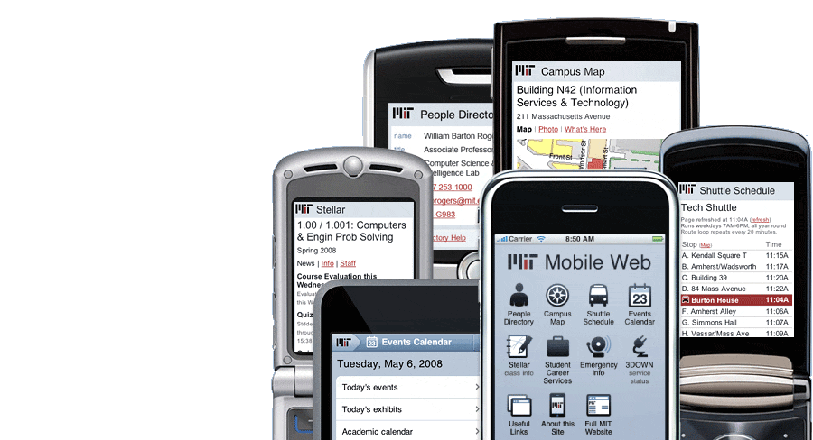

Get essential MIT information and services anytime, anywhere on your mobile device: m.mit.edu
The MIT Mobile Web offers up-to-date information, optimized for different types of mobile devices. Find people, places, events, course news, shuttle schedules, and more. All you need is a mobile device with a web browser and either WiFi or a data plan*